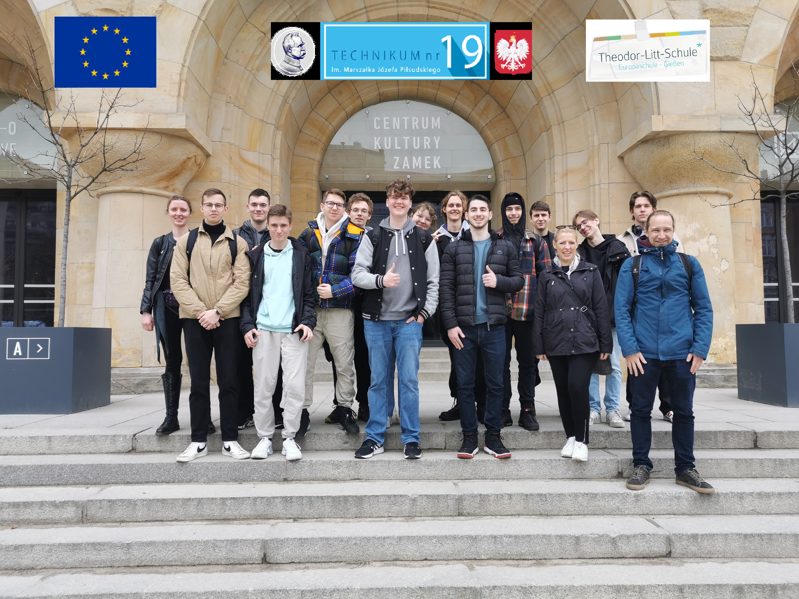

Demokracja i cyfryzacja oraz ich znaczenie w zawodzie w szkole
Projekt Erasmus odbył się 20-30 marca 2023r, obejmował wymiane uczniów ze szkół: Technikum nr. 19 im. Józefa Piłsudskiego w Poznaniu (Polska) i Theodor-Litt-schule w Giessen (Niemcy). Ta strona to wynik naszej współpracy, która zawiera 12 prezentacji na temat historii, kultury i ważnych postaci i grę memory.
